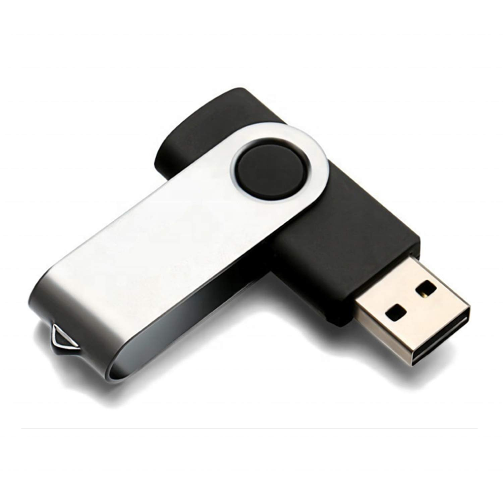
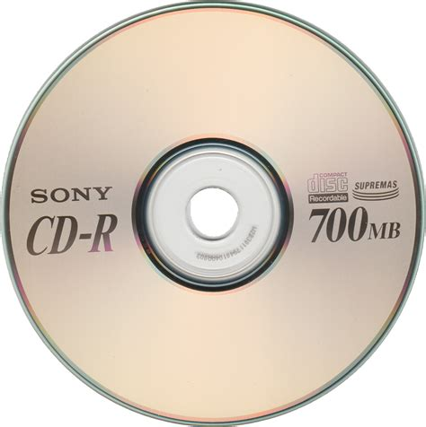
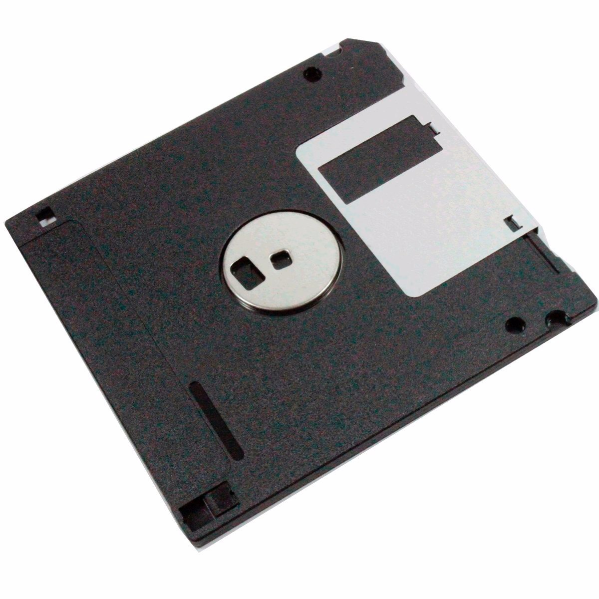

Dispositivos removíveis:
Os dispositivos removíveis que serão explicados são uma forma por assim dizer de poder armazenar
arquivos ou até imagens e fotos, sem precisar salvar no HD, por mais que existe formas mais
inteligentes de fazer isso como salvar na nuvem, é interessante saber disso.
Pendrivers:

Os pendrivers são pequenos dispositivos de armazenamento portátil que são baseados em memória flash,
eles são muito usados atualmente, mesmo existindo a nuvem para salvar arquivos, os pendrivers ainda são
muito utilizados para fazer boot de sistemas operacionais e etc, além de que sua conexão é via USB e uma
capacidade de aguentar armazenar bastante coisa, tanto que existe pen drivers que aguentam até 1TB (Sendo os
mais avançados e bem mais caros.)
CD:

Eu já expliquei o que é CD, mas, vamos aprofundar, o CD ou também chamado de compact disc é usado para
armazenamento de dados, áudio e vídeo, ele possui uma capacidade de aguentar até 700MB e só pode ser usado em
drive óptico.
DVD:

Ele é bem semelhante ao CD, suas únicas diferenças é que ele tem maior capacidade, por exemplo, ele é capaz de armazenar
vídeos, filmes, backups e jogos de até aproximadamente 4,7GB para DVD de simples camada e até 8,5GB para dupla camada, mas,
ele também é usado no drive óptico.
Disquetes:

Muito usado antigamente, ele era um dispositivo de armazenamento magnético em forma de disco flexível, ele armazenava
pequenas quantidade de dados, usado durante os anos 90, ele tinha uma capacidade de até 1,44MB, e bem ele não é mais vendido, mas,
existem pessoas que ainda possuem esse dispositivo.